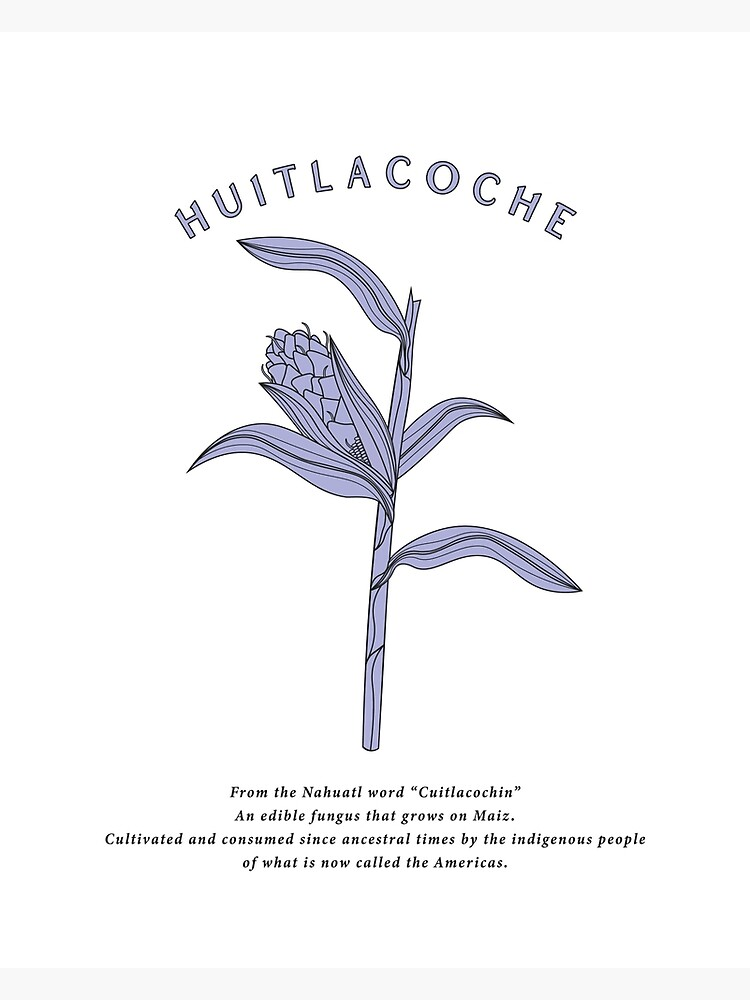

This toolkit offers a comprehensive guide to harnessing the principles of Huitlacoche for sustainable technology development, emphasizing collaboration between local communities, researchers, artists, and technologists.
It provides steps and principles of collaboration between ecologies of place, community and culture to inspire and facilitate the co-creation of technologies that using traditional ecological knowledge.
Integrating emergent strategies and design justice principles, this toolkit is inspired by Huitlacoche as a foundational element for creating equitable technology ecosystems, empowering communities through co-creation and inclusive innovation.
The Huitlacoche lifecycle, more than a biological journey, symbolizes the fusion of culture and ecology in technological innovation. It showcases a process that respects cultural narratives while challenging scientific objectivity, inspiring technologies that honor traditional knowledge and community engagement, thus fostering sustainable and culturally resonant solutions.
This is a step-by-step development of technology prototypes inspired by Huitlacoche, emphasizing sustainability, community engagement, and reciprocity.
Click on each dot to give you the step to follow.
Each step of the process is designed to reflect and reinforce the principles of sustainability, community engagement, and reciprocity, mirroring the natural efficiency and mutual benefits of Huitlacoche.
Anyone who wishes to learn, engage, co-create tech ecologies from Huitlacoche's knowledge.
Always seeking collaborations to keep growing, from:
You can get involved by co-developing your tech ecology.
Share it with us tagging us on social media.
Alternatively, join us for next workshop events:
link to workshop events here